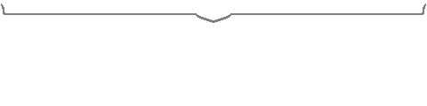

Taokaka (タオカカ) is the current guardian of the Kaka tribe village. She is a playable character in the BlazBlue series.
Taokaka is a rather unique take on the catgirl archetype with brown skin and long blond hair tied up into two braids and a black cat tail with a faded white tip. She seems to spend her entire time wearing a beige-colored hoodie with a cat hood and long cat-themed sleeves that cover her arms. She wears a pair of unusually-designed high-heel boots with the same cat theme but appear to be more fit for a creature with high ankles. According to concept art, Taokaka typically dresses skimpy underneath the hoodie, wearing only red panties with red straps. Taokaka’s actual face has been the subject of interest by both the characters and audience alike; her hood has been stated to conceal her facial features and she never removes it. All that can be seen are a pair of red beady eyes and an ever constant toothy grin that tends to emulate emotions when conveying facial expressions. When co-creator Daisuke Ishiwatari was questioned about Taokaka’s true appearance in an interview, he responded that he wanted to leave it to the players’ imaginations. However, he does confirm that her shadowed visage is not her true face.

When she was a child, she looks exactly the same when she grows up except she was barefoot.
Tao ducks down and shoots nails out of her paw causing multiple hits. 80 damage per hit
Quick slash. You cancel the move by rapidly tapping, or mashing, the A button. It is not really damaging or has the best proration, but it is the easiest move to execute.
Forward Drive. Allows you to drive parallel to the ground. This is the most commonly used gatling command after a 3C.
She can gatling into her drives, specials or supers at any given strike. 3C is also what she uses to initiate her drive loop, which is one of her main bnb combos. 3C can serve as a potential anti-air. But since Tao has no good anti-air options anyways, except for her berserker barrage and her super prorating 6A, her 3C is the next best bet. The idea is to use a normal that has similar properties to her crawl. Landing a 3C gives you 90% proration, which can lead into a hefty 4k combo. But if you miss, misjudge your opponent, or get baited, then you’ll take your opponent’s most damaging combo. Her foot sweep can only be blocked low.
This is her most damaging standing normal. Like all of her C attacks, 6C has lots of execution (23-64 frames) and recovery frames (18 frames), but deals insane amounts of damage. Unlike her other normals, you can only gatling into her drive, specials or supers. All combos initiated by 6C will land a 4k combo, but it is also very easy to punish. Even if you gatling into a drive or special, EVERY character will have a response to it. Wallbounces on hit. Charging 6C does not increase damage, but increases the proration scaler.
● When electrocuted, it can be seen that she is holding a fish in each hand under her sleeves.
● Taokaka’s birthday, February 22, happens to be World Thinking Day, a day to study other countries and cultures. ● During an episode of “Teach Me, Miss Litchi!”, Taokaka makes a reference to Spider Man with the quote “And the best way to find that person is by using Tao’s spide…err…Kaka senses!”. ● Before her fight with Hazama in BlazBlue: Continuum Shift, Taokaka exclaims “In the name of… the big white thingy in the night sky… Tao shall punish you!”, a reference to the Sailor Moon franchise. ● If Taokaka fights against Arakune, she will call out an “Anti-Squiggly” move during most, if not all, her attacks (Ex. Squiggly punch, Squiggly kick, etc.) ● In BlazBlue: Chronophantasma, Taokaka will help guide the player through the Tutorial Mode’s Intermediate- Combos section alongside Bang Shishigami. ● Jūbei appears in her astral to finish the opponent off, however if fighting Jūbei Torakaka will finish him off. ● She creates her own nicknames for other characters which she meets.